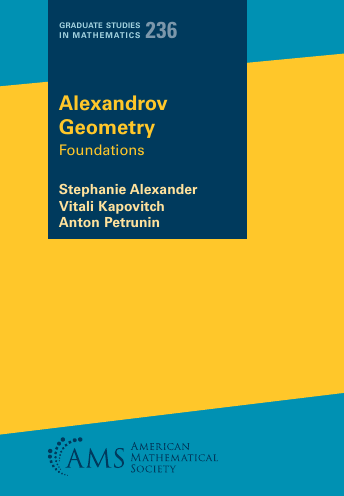

Links: paper version at AMS - Erratum - CC-BY version at arXiv - the latest version - the source files at GitHub.
Preliminaries
1. Model plane.
2. Metric spaces.
3. Maps and functions.
4. Ultralimits.
5. Space of spaces.
6. The ghost of Euclid.
7. Dimension theory.
Fundamentals
8. Fundamentals of curvature bounded below.
9. Fundamentals of curvature bounded above.
10. Kirszbraun revisited.
11. Warped products.
12. Polyhedral spaces.
Structure and tools
13. First order differentiation.
14. Dimension of CAT spaces.
15. Dimension of CBB spaces.
16. Gradient flow.
Please email us comments/corrections/suggestions via email or GitHub issues.